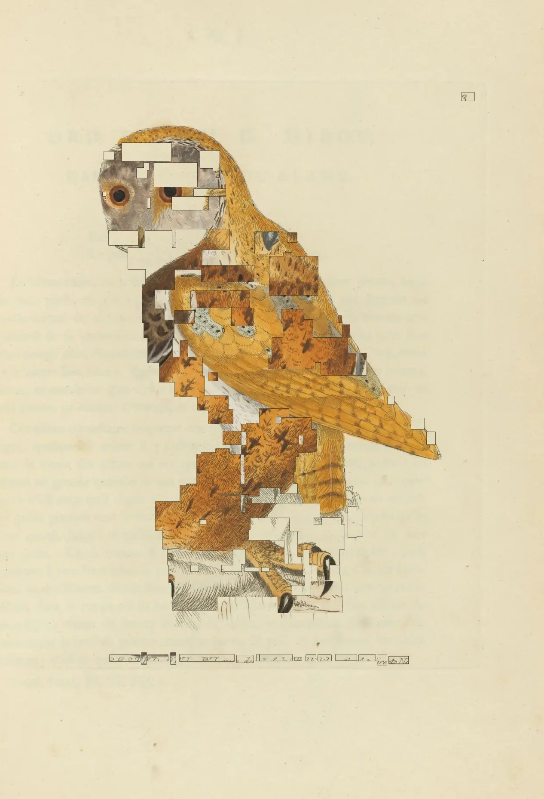
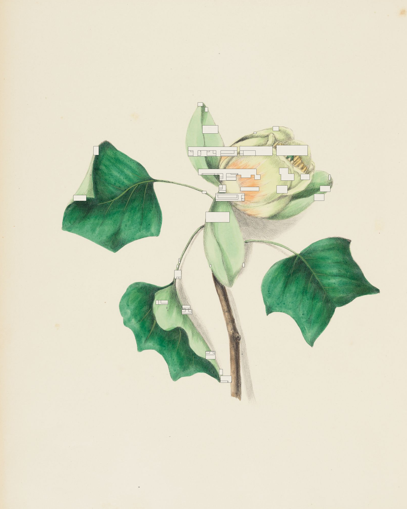
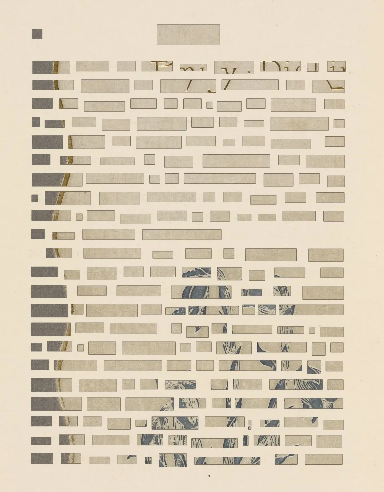
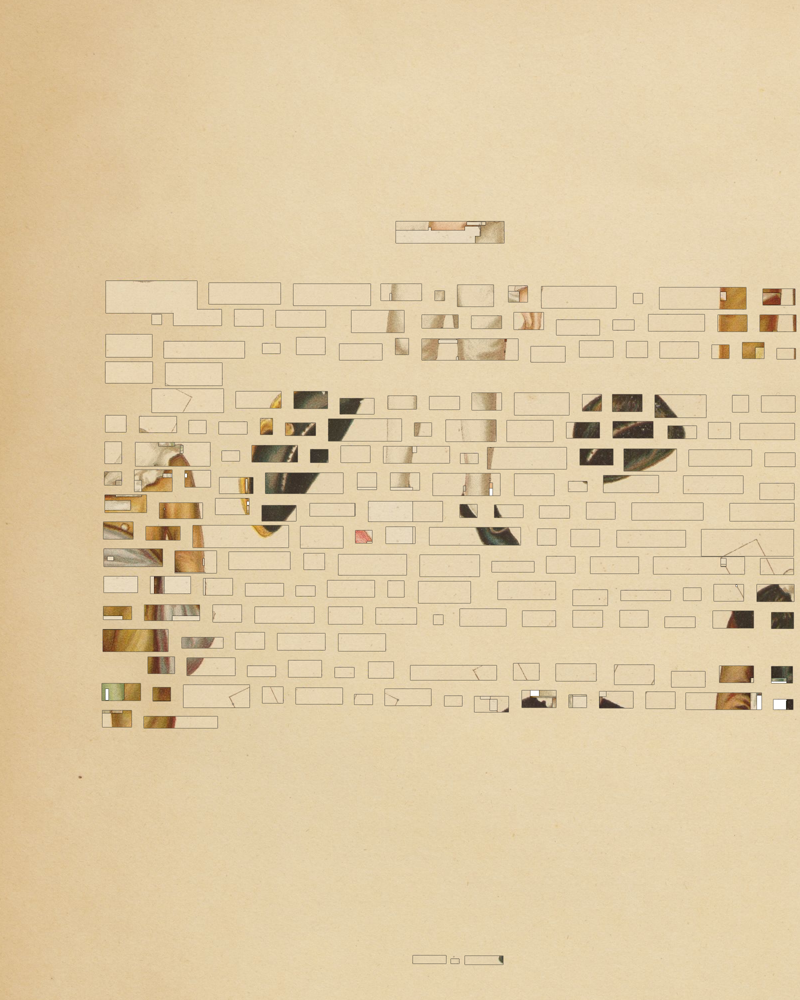
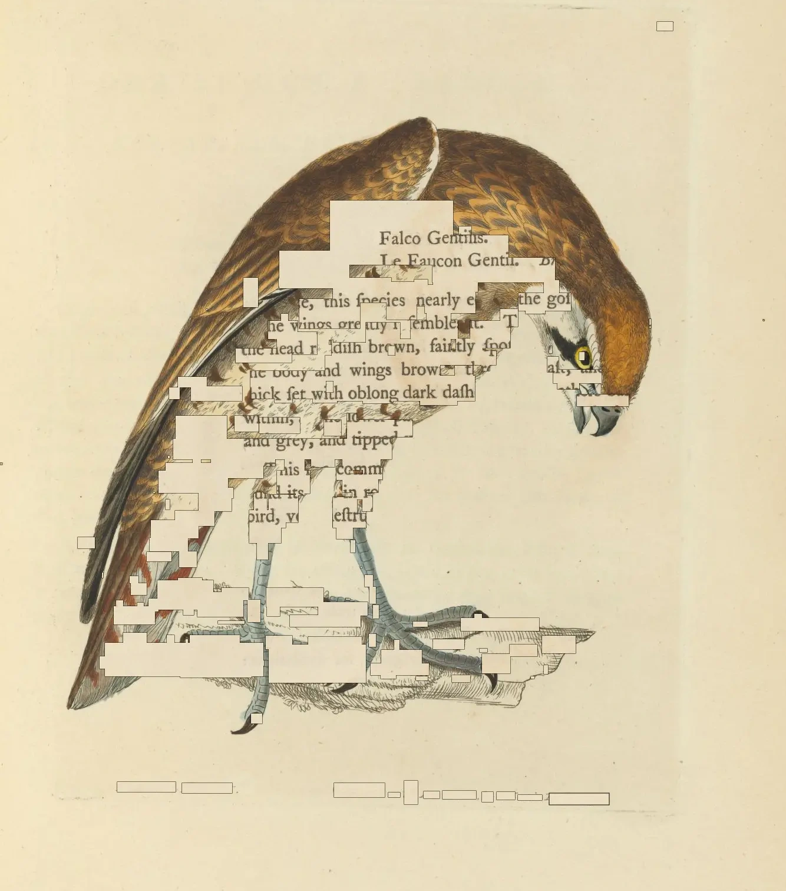

Cut-page artists' books from digitized archives
Paste a IIIF manifest URL from any library or archive
OCR identifies words on each scanned page
Words are randomly cut out, revealing layers beneath